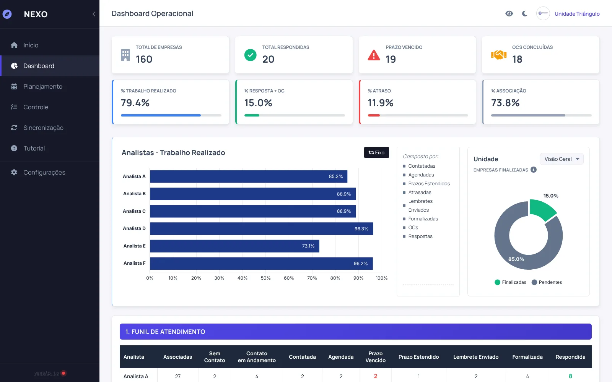
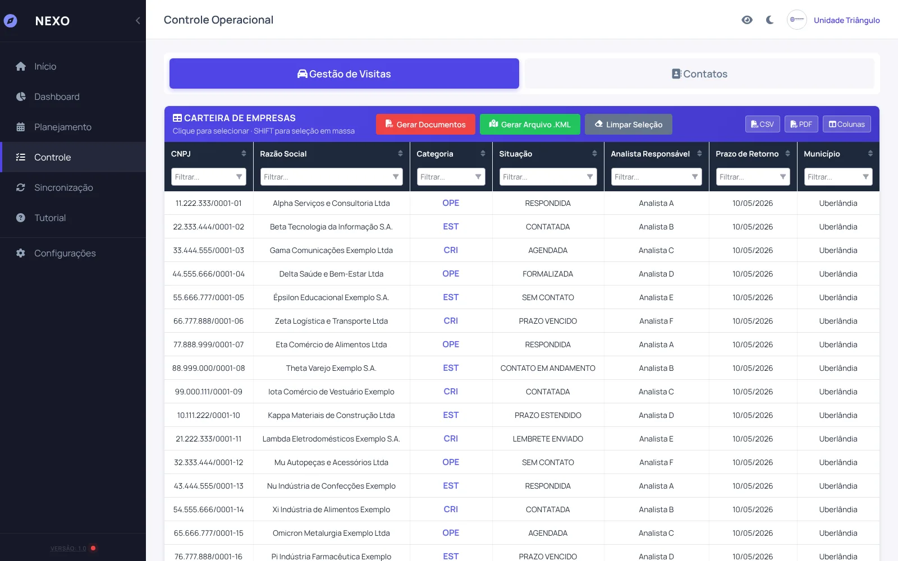
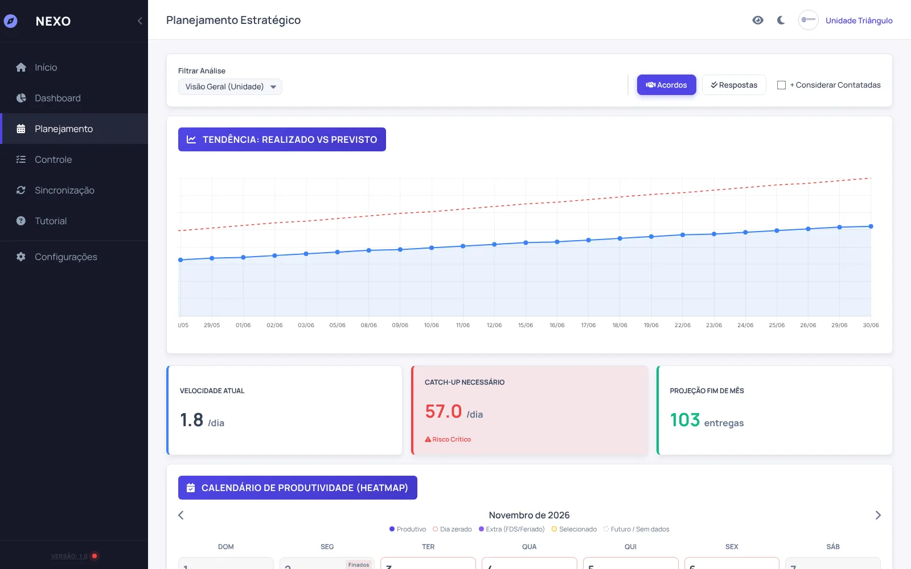
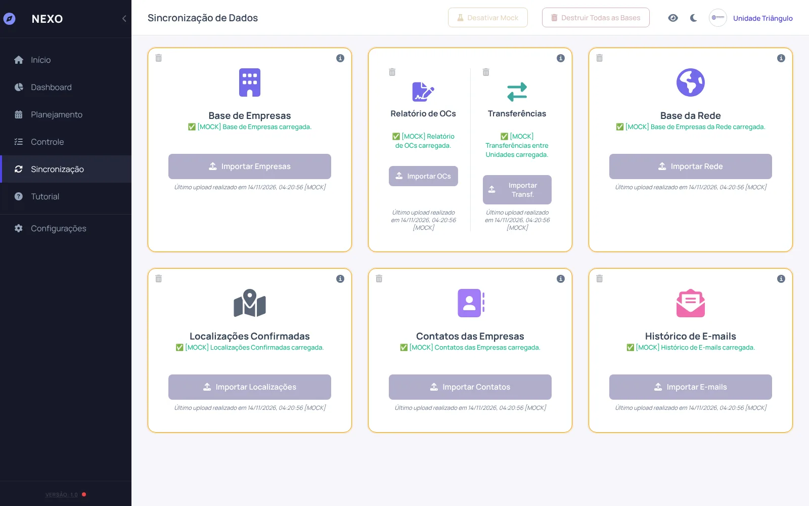
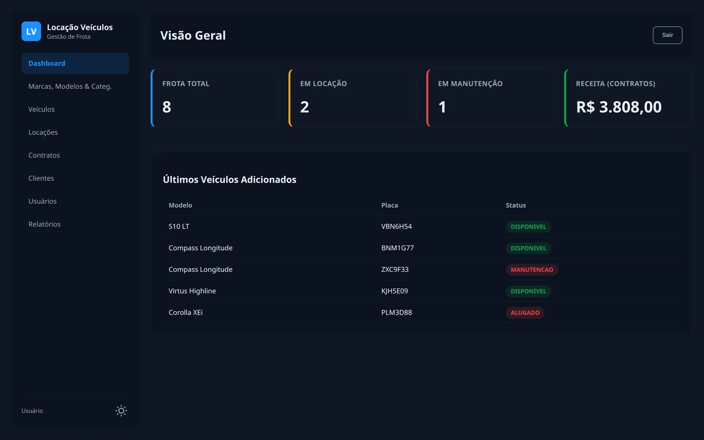
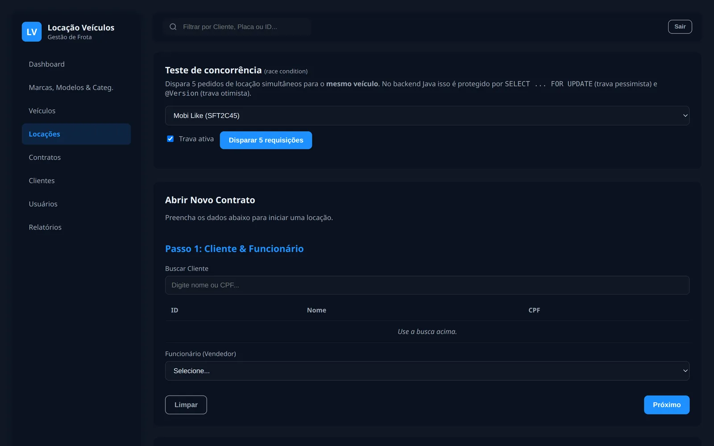
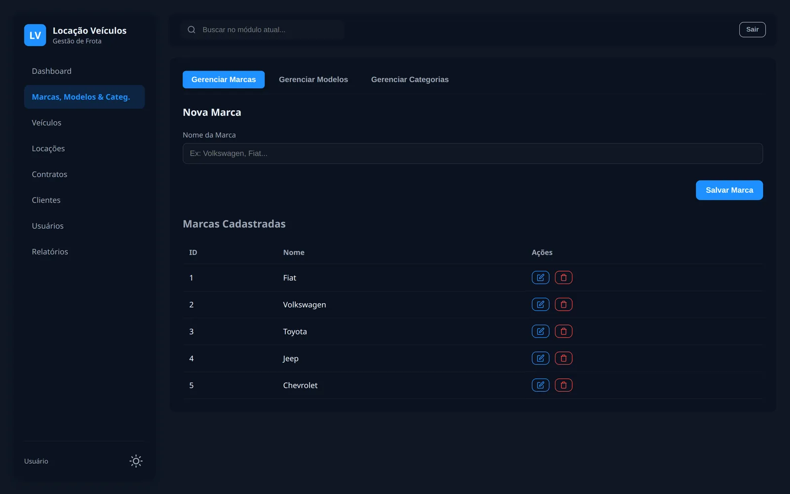
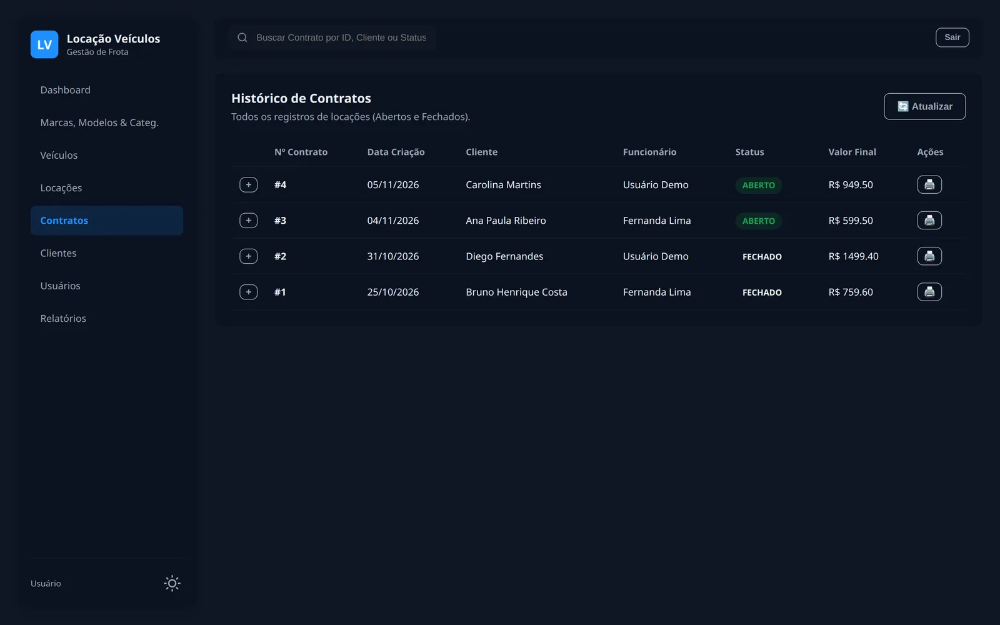

Sou Lucas Rikelmi, desenvolvedor que transforma rotina de campo em sistema: de apps que rodam inteiros no navegador, com criptografia e geocodificação offline, a APIs REST em Java/Spring. Mantenho o Candeia, biblioteca open source de geocodificação publicada no npm.
AES-256-GCM + Argon2idCandeia · npmGeocodificação offlineSpring Boot 3 · JPASimulador RV32 ciclo a cicloPDF vetorial em loteKML para Google EarthPostgreSQLZero servidor · offline-firstAES-256-GCM + Argon2idCandeia · npmGeocodificação offlineSpring Boot 3 · JPASimulador RV32 ciclo a cicloPDF vetorial em loteKML para Google EarthPostgreSQLZero servidor · offline-first
Projetos selecionados
03 estudos de caso · código aberto e demos
01
Candeia: do endereço brasileiro à coordenada, sem servidor
Biblioteca open source em JavaScript (navegador e Node, sem dependências) que geocodifica endereços brasileiros a partir do CNEFE 2022, o cadastro público de endereços do Censo. Baixa só o município consultado, entende quadra e lote e devolve cada resultado com o método usado e um raio de erro em metros.
JavaScript · Node 22
Zero dependências
CNEFE 2022
Parquet → JSON gzip
CI com benchmark
MIT · CC BY 4.0
Open source · npm 1.1.1
74,5%das respostas a até 100 m do ponto certo no benchmark sintético
~38%sem número de porta: limitado pela extensão da rua, e o raio informa isso
~1,3 MBpior download por consulta (São Paulo capital); a seguinte na mesma via não baixa nada
27UFs no índice publicado, gerado só pelo pipeline do repositório
Como ler esses números. O benchmark (132 municípios, 19.800 endereços) sorteia endereços do próprio CNEFE e os suja com abreviações, erros de digitação e campos faltando. Como o gabarito vem da mesma base, ele é otimista por construção e não diz nada sobre endereço que não está no CNEFE de 2022. A comparação com o geocodebr, do IPEA, nas mesmas consultas, e os limites dela estão no README.
Decisões técnicas
DadosCSV de 18,2 GB → Parquet de 3,2 GB → um índice JSON comprimido por município (5.425 dos 5.570 abaixo de 1 MB)
CargaMunicípio grande baixa o índice de vias e só a fatia da via pedida; cada arquivo é conferido por sha256 contra o manifesto
BuscaBloqueio por token do nome da via, depois Jaro-Winkler + Jaccard; bairro e CEP desempatam ruas homônimas
Respostastatus, metodo, raio e confianca calibrada fora da amostra, em vez de um score que finge ser probabilidade
RegressãoO CI roda o benchmark em todo pull request e falha se qualquer grupo cair mais de 1 ponto
// npm install candeia (Node 22+, sem dependências)import { criarGeocodificador } from"candeia";
const geo = criarGeocodificador({
base: "https://dados.lucasrikelmi.dev/cnefe2022/v1/",
});
const r = await geo.geocodificar("Rua 8, Qd 21 Lt 4", {
municipio: "5208707", // código IBGE
bairro: "Setor Central",
});
// r.status → "verde" … "vermelho"// r.metodo → "quadra_lote", "numero", "eixo", …// r.raio → até onde o ponto pode estar, em metros
Fonte: CNEFE, Censo 2022, IBGE (dados públicos). O código roda no navegador ou no Node de quem usa; o servidor dos arquivos vê só qual município foi baixado, nunca o endereço consultado.
02
NEXO: gestão de operações de campo
Plataforma para equipes que acompanham centenas de empresas em campo: importa bases, gera cartas e recibos em PDF, localiza endereços no mapa, cruza contatos e projeta metas, tudo dentro do navegador, sem servidor e sem enviar nenhum dado para fora.
JavaScript modular
Web Crypto
Argon2id
jsPDF
Chart.js
KML
Em produção
nexo / dashboard




+150hde trabalho manual devolvidas à equipe em 6 meses
R$ 0de servidor e hospedagem: roda no navegador da equipe
0dados de clientes enviados para fora (LGPD)
5tipos de documento gerados em lote, prontos para imprimir
Segurança
Cofre local cifrado
A base fica no navegador comprimida e cifrada com AES-256-GCM; a chave nasce de uma senha via Argon2id. Bloqueio por inatividade, limite de tentativas e expiração automática.
Documentos
Gerador próprio de documentos
Convite, lembrete, comunicado formal, recibo em duas vias e termo LGPD, montados por blocos em jsPDF com texto vetorial. Um lote de 10 empresas sai em ~220 KB.
Geo
Geocodificação offline
Motor próprio que entende endereço brasileiro do jeito que ele é digitado. Depois virou uma biblioteca independente, o Candeia; a versão original roda ao vivo abaixo.
Contatos
Cruzamento de contatos
Normaliza telefones, e-mails e CNPJs e agrupa empresas ligadas ao mesmo representante, o que vira uma abordagem centralizada.
ETL
CSV de milhões de linhas no browser
Leitura em streaming com detecção de encoding e separador, filtro por município e geração de índice, sem Python e sem travar a aba.
Gestão
Dashboard e projeção de metas
Indicadores, funil de atendimento, produtividade por técnico e curva realizado × previsto com calendário de dias úteis e feriados.
Arquitetura em camadas
ArquivoFileProcessor · ContratosArquivo: lê CSV, não conhece regra de negócio
PersistênciaStorageManager · CryptoManager: blocos comprimidos e cifrados
Demonstração com cenário fictício de gestão de fornecedores: empresas, pessoas, endereços e documentos são inventados. A criptografia continua ativa, só o diálogo de senha é pulado.
03
Locadora: gestão de frota de ponta a ponta
Sistema completo para locadoras de veículos: cadastro da frota, clientes, contratos, devolução com registro de avarias e pagamento, num fluxo só. Backend em Java 17 + Spring Boot 3 com PostgreSQL, pronto para conectar a um app ou site, e painel web próprio.
Java 17
Spring Boot 3.4
Spring Data JPA
PostgreSQL
REST
JUnit 5 · H2
Projeto acadêmico
locadora / dashboard




8 → 1pedidos simultâneos pelo mesmo carro viram um único contrato
13entidades cobrindo frota, clientes, contratos, avarias e pagamentos
8módulos de API REST prontos para integrar com app ou site
5testes automáticos que validam as regras a cada alteração
// Dois atendentes reservando o mesmo carro no mesmo instante:// SELECT ... FOR UPDATE garante que só um contrato seja fechado.@Lock(LockModeType.PESSIMISTIC_WRITE)
@Query("select v from Veiculo v where v.id = :id")
Optional<Veiculo> findByIdParaAtualizacao(@Param("id") Long id);
// ContratoService.abririf (veiculo.getStatus() != StatusVeiculo.DISPONIVEL) {
throw RegraNegocioException.conflito("Veículo não está disponível"); // 409
}
// preço calculado no servidor, em BigDecimal: diárias × valor da categoria
BigDecimal valor = categoria.getValorDiaria()
.multiply(BigDecimal.valueOf(calcularDiarias(locacao)))
.setScale(2, RoundingMode.HALF_EVEN);
veiculo.setStatus(StatusVeiculo.ALUGADO);
Na demo, as chamadas para localhost:8080 são atendidas por uma API simulada no navegador que reproduz as regras do backend Java. Na tela de Locações há um painel que dispara 5 pedidos simultâneos para o mesmo carro, com e sem a trava. Login pré-preenchido: demo / demo123.
Playground offline · o motor por dentro
Do endereço digitado ao ponto no mapa
Endereço de cadastro no Brasil chega como “RUA OITO QD 21 LT 4”, “Av Brazil 340” ou “esquina com a Goiás”. O motor normaliza, extrai quadra, lote, número e km, acha a via por similaridade e devolve a coordenada com o nível em que encontrou o endereço, sem chamar nenhuma API. Abaixo roda o geo_core.js, a versão original do motor que virou o Candeia, sobre uma cidade fictícia: nada sai do seu navegador.
exato
bom
aproximado
duvidoso
não encontrado
Similaridade
Jaro-Winkler + Jaccard, com guarda numérica
“Rua 8” e “Rua 80” têm prefixo idêntico; uma regra de número terminal zera o score entre vias numeradas diferentes antes que o Jaro-Winkler as aproxime.
Desempenho
Índice de bloqueio por token
Só compara a consulta com vias que compartilham ao menos um token, com cache por município. A varredura completa fica só para erro de digitação em via de uma palavra.
Precisão
Medoide em vez de centroide
Quando não há número de porta, o ponto escolhido é um ponto real da rua (filtrado por bairro e quadra, sem outliers), nunca a média que pode cair no meio de uma quadra.
Laboratório de fundamentos
o que acontece abaixo do framework
Arquitetura de computadores · simulador
Um computador inteiro, ciclo a ciclo
CPU RISC-V (subconjunto do RV32I) com cache L1, barramento arbitrado, DMA em rajada, controlador de interrupções e periféricos mapeados em memória. Nasceu como planilha Excel/VBA num seminário da faculdade; a versão web tem núcleo testado separado da interface e mede cada ciclo, inclusive a disputa pelo barramento.
mais rápido copiar 256 bytes com DMA do que com LW/SW na CPU, contando configuração e interrupção.
CPU—
DMA—
Barramento durante a cópia por DMA
Ferramentas do dia a dia
Front-end
JavaScript (ES2022)
HTML semântico · CSS
Chart.js · jsPDF · JSZip
Web Crypto API
Back-end
Java 17
Spring Boot · Spring Web
Spring Data JPA · Hibernate
Python (scripts e ETL)
Dados
PostgreSQL
IndexedDB · localStorage
CSV / ETL em streaming
KML · GeoJSON
Prática
Git e GitHub
Testes automatizados (JUnit, node:test)
Documentação técnica
Segurança e privacidade (LGPD)
Do problema real ao sistema
Meus melhores projetos nasceram dentro da operação: planilhas que viravam retrabalho, cartas montadas uma a uma, endereços procurados no mapa um por um. Eu observo o fluxo, desenho a solução e entrego algo que a equipe usa no dia seguinte.
2024 →
IBGE · Agente de Pesquisas e MapeamentoColeta e mapeamento de dados em campo para pesquisas oficiais.
2024 → 2028
Ciência da Computação · PUC GoiásBacharelado em andamento. Hackathon IV CodeCraft (2026) e competições de segurança (CTF).
2023 → 2024
UNIFAN · PatrimônioInventário patrimonial e planilhas de consulta usadas como sistema interno de busca.
2021 → 2023
Rede Click Cursos · Instrutor e suporte técnicoDe estagiário a referência técnica da unidade: Windows Server, laboratório e relatórios automatizados com VBA.
Privacidade por padrãoDado sensível não sai da máquina; quando precisa ficar salvo, fica cifrado.
Funciona sem internetBibliotecas e fontes servidas localmente, sem build e sem depender de CDN.
Camadas bem separadasLeitura de arquivo, regra de negócio e interface não se misturam.
Medido, não estimadoNúmero que aparece aqui sai de teste ou de uso real, e o código está aberto para conferir.
Vamos conversar
Tem uma operação pra destravar?
Vaga, projeto freelance ou consultoria: me conte o problema e eu respondo em até 1 dia útil.